Que s’est-il réellement passé lorsque Gros Buu est devenu Super Buu ? Retraçons le traitement de cet antagoniste, de son apparition à sa forme finale, en observant les hésitations apparentes, les changements de mise en scène et les possibilités laissées ouvertes par le récit.
Le raisonnement
01 — Un antagoniste dont on ne connaît pas les limites02 — Le combat contre Goku fixe-t-il réellement son plafond ?03 — Une scission, puis une recomposition04 — Un changement de vocabulaire qui n’est pas anodin05 — Mister Satan avait déjà vaincu Majin Buu06 — Super Buu : le même moteur, une autre configuration ?07 — Les trois appréciations de Goku08 — Préconstruction ou ajustement au fil de l’écriture ?Conclusion — Une réserve de possibilités narrativesUn antagoniste dont on ne connaît pas les limites
Lorsque Majin Buu apparaît, Toriyama joue une première fois avec les attentes du lecteur. Après avoir annoncé un monstre terrifiant, il nous présente un personnage rondouillard, presque ridicule. Mais la plaisanterie ne s’arrête pas à son apparence : sa puissance elle-même semble décevante aux yeux des Saiyans.
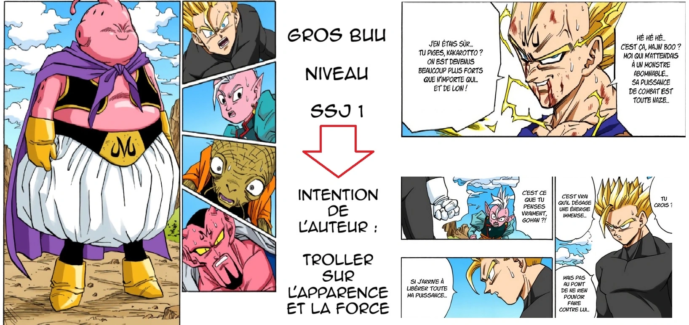
Gohan envisage de pouvoir lui tenir tête en libérant toute sa puissance. Vegeta, lui, se montre franchement méprisant. Puis Buu augmente sa puissance en un instant. Le rapport de force est réévalué, et cette fois les personnages les plus puissants que le récit nous présente comme combattants actifs prennent la menace au sérieux.
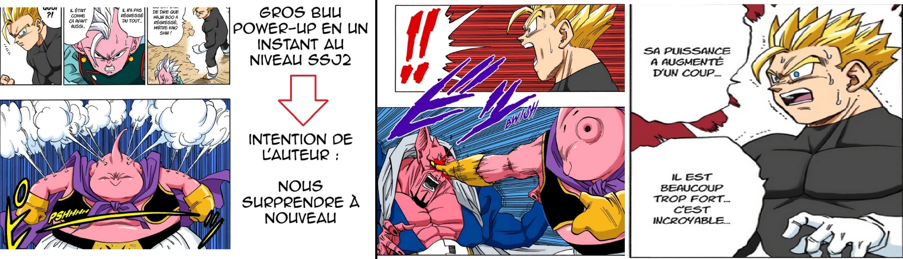
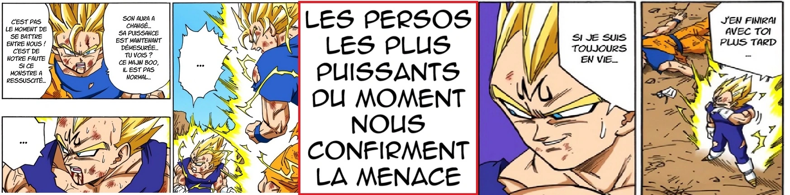
Ce qui nous intéresse ici, ce n’est pas de déterminer à combien d’unités s’élève son ki, mais de constater que Toriyama ne nous donne aucun plafond clairement identifié. Gros Buu possède encore une réserve narrative : rien ne nous permet de savoir jusqu’où il peut aller.
Le combat contre Goku fixe-t-il réellement son plafond ?
Gros Buu n’est pas insensible à la douleur. Vegeta le surprend, le blesse et provoque sa colère. Buu manifeste alors une nouvelle montée en puissance. Il ne faut donc pas confondre le fait de subir des coups et celui d’être réellement menacé de défaite.
Face à Goku SSJ3, la situation est différente. Buu encaisse, apprend au contact de son adversaire et s’amuse. Il veut même poursuivre le combat lorsque Goku reprend sa forme normale. Aucune nouvelle montée de puissance comparable à celle du combat contre Vegeta n’est explicitement signalée.
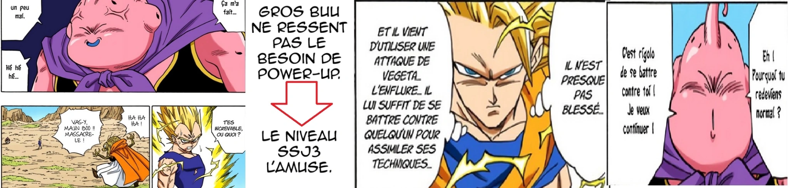
Le même affrontement, lu sous l’angle de la mise en scène, est analysé dans Goku SSJ3 vs Gros Buu.
Pourtant, après cet affrontement apparemment équilibré, Goku estime qu’il n’aurait probablement pas pu gagner et qualifie la puissance de Buu de démesurée. Pourquoi cette appréciation, alors que le lecteur vient de voir le SSJ3 lui tenir tête ?
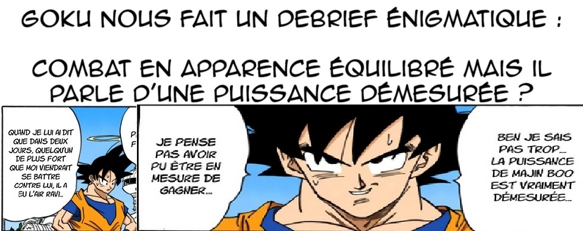
RégénérationLa capacité de Buu à se reconstituer après les dégâts., la résistance et l’apprentissage de Buu peuvent expliquer cette appréciation. Une réserve de puissance encore inexprimée est aussi envisageable. Mais le manga ne nous permet pas de choisir avec certitude entre ces explications. Le combat n’établit donc pas, à lui seul, le maximum de Gros Buu.
Il rappelle également la fonction de Goku à ce moment du récit : il n’est pas destiné à résoudre immédiatement le conflit. Il sert de référence aux nouveaux héros, les enfants, qui doivent prendre la relève et dépasser cet horizon.
Une scission, puis une recomposition
Lorsque la colère de Buu provoque ScissionBuu se divise en deux êtres : un Buu bienveillant et un Buu maléfique., le narrateur nous fournit une information inhabituelle : la majeure partie de sa puissance a été transférée à son double maléfique. Ce dernier domine sans difficulté la composante bienveillante.
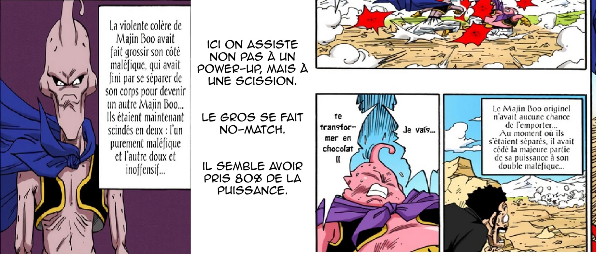
Bien et mal coexistent
Part minoritaire de la puissance
Part majoritaire de la puissance
La composante maléfique domine
Or, quand le double maléfique absorbe son autre moitié, il semble reconstituer les deux composantes qui existaient déjà en lui. Mais le résultat n’est plus le même. Pourquoi ? Le manga ne donne pas de formule qui permettrait de calculer la puissance de cette nouvelle configuration. Il attire en revanche notre attention sur sa nature.
Un changement de vocabulaire qui n’est pas anodin
Comparons la première montée en puissance de Gros Buu à l’apparition de Super Buu. Dans le premier cas, les réactions insistent sur une augmentation de puissance. Dans le second, Goku et Piccolo signalent avant tout un changement d’aura. Piccolo précise que Buu est devenu purement maléfique et que son corps s’est modifié pour être plus apte au combat.
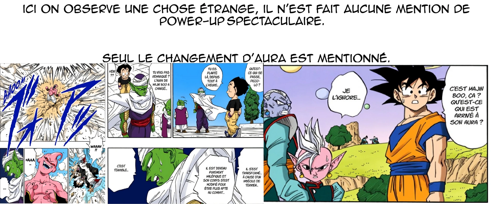
Ce n’est pas l’absence d’une augmentation de puissance que nous observons. C’est l’absence, dans ces cases, d’une explication quantitative de cette augmentation. Super Buu se révèle ensuite hors de portée de Goku, mais la scène de sa naissance ne construit pas la menace comme un simple changement de niveau.
Le changement de corps et de nature est explicitement commenté. L’idée d’une optimisation d’un potentiel déjà présent est notre hypothèse de lecture.
Mister Satan avait déjà vaincu Majin Buu
Il faut ici se rappeler où nous en étions dans le récit. Vegeta s’était sacrifié, Goku avait dévoilé le Super Saiyan 3La transformation de Goku face à Gros Buu, étudiée dans l’article « Goku SSJ3 vs Gros Buu ». et les enfants apprenaient la fusion. Pourtant, le personnage qui avait réellement réussi à neutraliser la menace n’était autre que Mister SatanLe champion du monde d'arts martiaux, simple humain, que Buu prend en affection..
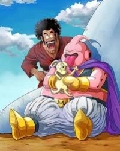
Il ne l’avait pas vaincu en le surpassant. Il avait fait émerger sa bonté et obtenu qu’il renonce à tuer. Cette victoire est morale, non martiale. C’est la violence des hommes qui vient briser cet équilibre et provoque la scission de Buu.
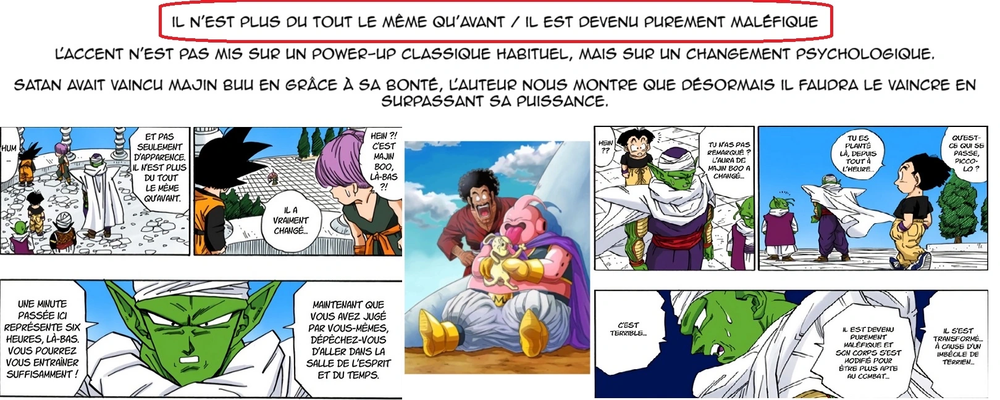
Le basculement vers Super Buu représente ainsi la mise en échec de cette solution. Non que toute trace d’attachement à Satan ait disparu : elle subsiste. Mais la bonté n’est plus aux commandes. La puissance des héros redevient nécessaire pour résoudre le conflit. Avant d’être une surenchère de ki, cette transformation est donc un retournement dramatique.
Super Buu : le même moteur, une autre configuration ?
Pour illustrer une lecture possible, prenons l’exemple du tuning automobile. Imaginons deux véhicules dotés du même moteur. En modifiant la transmission, la masse, l’aérodynamique ou le châssis, on peut obtenir des performances très différentes sans nécessairement changer le moteur.
Gros Buu
Un potentiel considérable, dont les manifestations sont variables et dont le corps n’est pas spécialement orienté vers le combat.
Super Buu
Une configuration dominée par le mal, avec un corps explicitement adapté au combat.
Et si Super Buu représentait une exploitation plus complète du potentiel déjà présent chez Gros Buu ? Cette lecture permet de rendre intelligible la recomposition sans supposer nécessairement l’apparition soudaine d’une réserve énergétique étrangère. Elle reste une hypothèse : le manga ne démontre ni l’identité du ki maximal des deux formes ni que la seule optimisation explique tout l’écart.
Les trois appréciations de Goku
Ce qui donne toute sa portée à cette interrogation, c’est l’évolution du jugement de Goku sur l’antagoniste.
Goku doute de sa capacité à gagner. Le plafond de Buu reste incertain.
Goku ne recherche pas de match retour individuel. Face à BuucoloAppellation courante pour Super Buu ayant absorbé Piccolo., il s’en remet à Gohan ; à l’intérieur de Buu, après le retrait des absorbés, il estime encore que sortir sans fusion serait trop dangereux.
Goku affirme finalement qu’il aurait pu vaincre Gros Buu en SSJ3, mais qu’il voulait laisser la place aux jeunes. Il accepte de tenter sa chance contre la forme originelle.
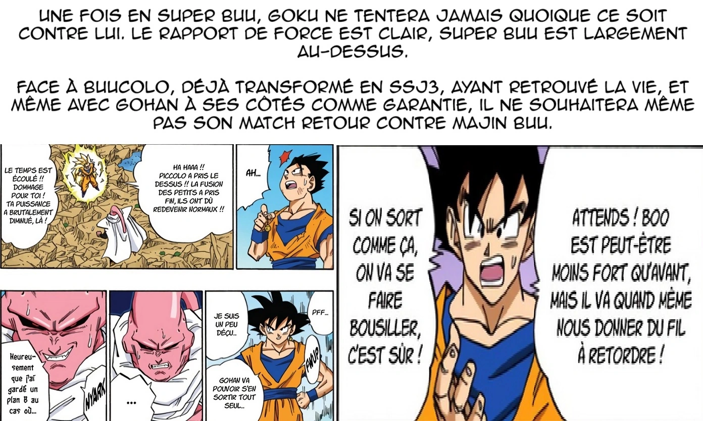
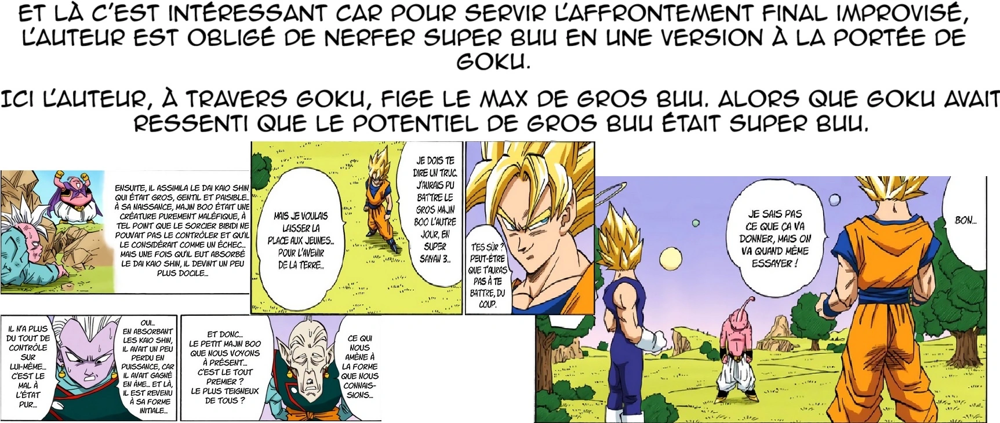
Au départ, Goku entretient l’incertitude. À la fin, il situe rétrospectivement Gros Buu à sa portée. L’explication interne est donnée par Goku lui-même : il souhaitait responsabiliser la génération suivante. Cela n’interdit pas une lecture externe. Pour installer le combat final, le récit redéfinit la configuration de Buu et les possibilités de Goku. Affirmer que Toriyama a improvisé précisément ce dénouement demanderait toutefois une source indépendante.
Préconstruction ou ajustement au fil de l’écriture ?
Revenons à la première appréciation de Goku. Son débriefing peut-il servir de préparation narrative à l’apparition de Super Buu ? Oui, dans la mesure où il laisse ouverte la question des limites de l’antagoniste. Le lecteur a déjà été invité à ne pas considérer le combat contre Goku comme la démonstration du maximum de Buu. La suite peut donc exploiter cette indétermination.
Mais il faut distinguer deux propositions : une scène peut préparer efficacement ce qui vient après, sans que nous puissions démontrer que l’auteur avait déjà prévu cette suite lorsqu’il l’a écrite.
Lecture interne
Super Buu pourrait être une configuration libérant ou optimisant un potentiel latent, rendue possible par la domination de sa part maléfique.
Lecture externe
La puissance initialement indéterminée de Buu offre à Toriyama une marge de manœuvre pour redéfinir son antagoniste au gré des besoins du récit.
La première lecture cherche à expliquer le fonctionnement du personnage. La seconde étudie la manière dont le récit nous le présente. Elles ne s’excluent pas.
les citations et observations reposent sur les planches françaises fournies. Le vocabulaire japonais original et d’éventuels témoignages de production n’ont pas été vérifiés ici.
Une réserve de possibilités narratives
Ce qui singularise la transformation de Gros Buu en Super Buu, c’est que Toriyama ne nous raconte pas simplement comment un personnage devient plus fort. Il nous raconte comment un antagoniste, un temps apprivoisé, devient de nouveau une menace que la bonté seule ne peut plus neutraliser.
La puissance de Gros Buu, laissée initialement indéterminée, constitue une réserve de possibilités narratives. Super Buu en est une redéfinition ; Kid Buu en constitue une nouvelle, au service du dénouement.
Il ne s’agit pas de prouver que Toriyama avait tout prévu, ni de qualifier systématiquement ces ajustements d’incohérences. Il s’agit d’observer comment le récit construit, puis reconfigure, son antagoniste au fil de sa progression.